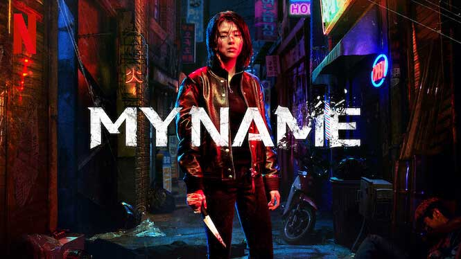

Romance
Pousando No Amor

Um dos meus doramas preferidos!
Sinopse: Pousando no amor, disponível na Netflix, conta a história de uma jovem herdeira sul-coreana que decide fazer um passeio de parapente para testar os novos produtos esportivos da empresa de sua família. Mas durante o percurso, ela acaba presa em um tornado e é jogada para fora da fronteira da Coréia do Sul, caindo em solo norte-coreano. Já no chão, ela acaba conhecendo um jovem general do exército que decide ajudá-la a se esconder. Durante esse período juntos, os dois acabam criando uma forte conexão.
Fonte: AdoroCinema
Comédia
Pretendente Surpresa

Sinopse: Em Pretendente Surpresa, Shin Ha-ri (Kim Se-jeong) tem uma paixonite por um colega de trabalho já há bastante tempo. No entanto, quando ela descobre que ele tem uma namorada, Ha-ri acaba se sentindo deprimida. Para desabafar sobre seus sentimentos, Ha-ri decide encontrar sua amiga Jin Young-seo (Seol In-ah), uma jovem de origem rica. Ela pede para que Ha-ri se passe por ela em um encontro às cegas no qual ela não tem intenção de participar. Ha-ri aceita a proposta, mas para o seu espanto, o encontro é com Kang Tae-mu (Ahn Hyo-seop), ninguém menos do que o CEO da empresa onde ela trabalha. Tae-mu está participando do encontro por pressão do avô, fundador da empresa que herdou. O jovem solteiro é obcecado por trabalho e decide que irá casar com a primeira pessoa que conhecer, apenas para não ter seus objetivos profissionais comprometidos.
Fonte: AdoroCinema
Suspense
Alice in Borderland

Sinopse: Baseada no mangá homônimo de Haro Aso, Alice in Borderland, disponível na Netflix, acompanha Ryohei Arisu (Kento Yamazaki), um jovem desempregado que passa boa parte do tempo jogando videogame. Certo dia, ele acorda e se depara com uma Tóquio completamente diferente do que está acostumado. Nessa estranha versão da cidade, Arisu e seus amigos viram personagens de um perigoso jogo e precisam seguir as regras para sobreviver. Tendo conhecido Usagi (Tao Tsuchiya), uma garota que se move sozinha na disputa, Arusi decide se juntar a ela para desvendar os segredos do novo mundo paralelo. Juntos, os dois se aventuram nessa Tóquio distópica e cheia de perigos na expectativa de descobrir o que está acontecendo. Enquanto adentram essa aventuram, eles descobrem segredos impensáveis e percebem que existe muito mais por trás de toda essa bizarra situação. Enquanto navegam por esse estranho novo mundo, as situações se tornam cada vez mais extremas e perigosa.
Fonte: AdoroCinema
Ação
My Name
Sinopse: My Name, série sul-coreana original da Netflix, acompanha Yoon ji-woo (Han So-hee), uma mulher que, após presenciar o assassinato do pai, busca vingança a todo custo. Ela deposita sua confiança em um chefão do crime organizado da Córeia do Sul que promete justiça a ela. Sob seu comando, Yoon ji-woo entra para polícia coreana na intenção de se tornar informante para ele.
Fonte: AdoroCinema
Drama
Tudo Bem Não Ser Normal

Sinopse: Tudo Bem Não Ser Normal, disponível na Netflix, conta a história de Moon Kang Tae (Soo-hyun Kim), um agente comunitário de saúde de uma ala psiquiátrica que não tem tempo para amar, e Go Moon Young (Ye-ji Seo), uma sucedida autora de livros infantis que sofre de transtorno de personalidade anti-social e nunca conheceu o amor. Depois de se conhecerem, os dois lentamente começam a curar as feridas emocionais um do outro.
Fonte: AdoroCinema
Sobre mim
Olá, meu nome é Isabela Marques e sou estudante no curso técnico em desenvolvimento de sistemas! Este site é um dos meus primeiros projetos e o fiz com muito carinho. Resolvi fazer sobre doramas, pois os doramas são minha grande paixão desde criança, então resolvi juntar meu conhecimento técnico com meu hobby e cá estamos!
Espero que aproveite muito esse site e traga boas lembranças. E ah, deixarei meu LinkedIn para me conhecerem melhor.
LinkedIn
Kasamidaaa!